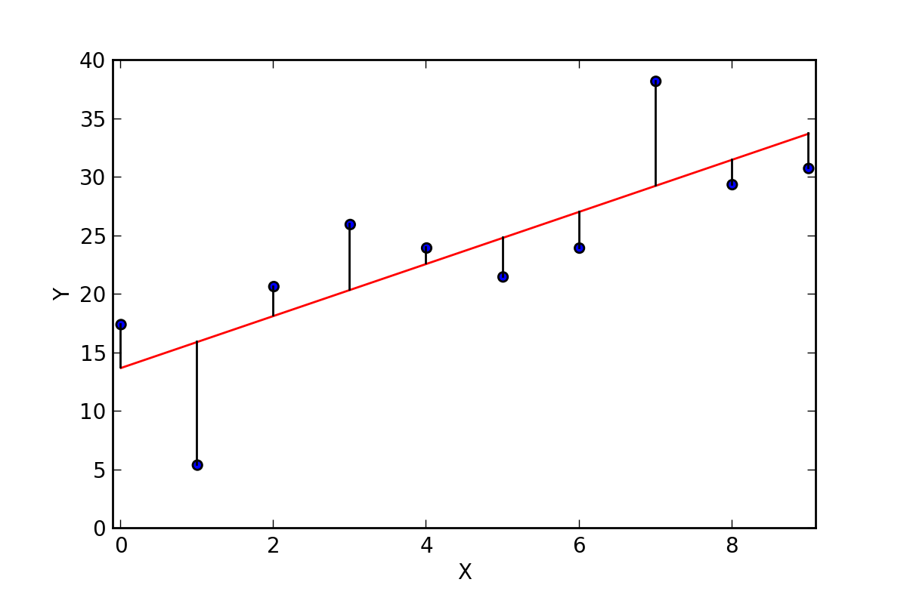

Archive
| Date | Title | Author | Reading Time | |
|---|---|---|---|---|
| Jul 26, 2023 | Welcome to Bioinfo Guide Book | 2 min | ||

|
Sep 7, 2023 | Mastering Conditional Logic in R | 8 min | |
| Sep 7, 2023 | Getting Started with Bioinformatics in R | 6 min | ||
|  | Sep 7, 2023 | Regression Analysis in Bioinformatics | 48 min | |

|
Sep 19, 2023 | Data Wrangling Best Practices in R - Part 1 | 3 min | |

|
Sep 21, 2023 | Data Wrangling Best Practices in R - Part 2 | 5 min | |
| Sep 24, 2023 | Principal Component Analysis in R | 13 min | ||
| Feb 18, 2024 | Cosine Similarity for Gene Expression | 13 min | ||

|
Mar 30, 2024 | Understanding Nonsense-Mediated Decay (NMD) | 15 min | |
| Aug 10, 2024 | Centrality Measures in R | 3 min | ||
| Aug 11, 2024 | Variability Measures in R | 3 min | ||
| Aug 12, 2024 | Understanding Confidence Intervals in R | 4 min | ||
| Aug 14, 2024 | Basic Statistical Concepts in R | 5 min | ||
| Aug 15, 2024 | Introduction to ANOVA and Linear Models | 8 min | ||

|
Mar 5, 2025 | p-Values & FDR in Biological Experiments | 7 min | |
| Jul 18, 2025 | Understanding Set Operations | 8 min | ||

|
Nov 12, 2025 | Introduction to Biostatistics | 5 min |
No matching items